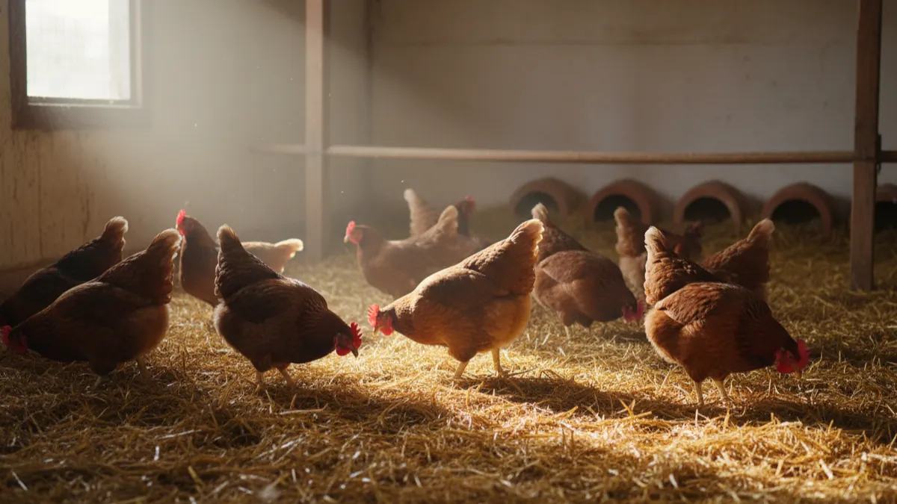

Tavuklarda gagalama ve kanibalizm: neden ve çözüm
Sürüde bir sabah kanlı bir sırt, yolunmuş bir kloak görürsen mesele bitmez, yeni başlar. Gagalama ve kanibalizmin gerçek nedenlerini ve sürüyü durduran müdahaleyi anlatıyorum.

Bir sabah kümese girdin, bir tavuğun sırtı çıplak, kuyruk dibinde kan var. "Bit mi kaptı acaba" diye bakarsın önce. Değildir. Ertesi gün ikinci bir tavukta aynı manzara, üçüncü gün en zayıf olanı köşede yerde, kloakı yolunmuş, sürü üstüne üşüşmüş. İşte bu, gagalamanın kanibalizme dönüşmesidir ve bir kez kan tadını alan sürü kolay kolay durmaz. Tavuk, gördüğü kırmızıya gagayı vurur; yaradan sızan kan onları çeker, çektikçe yara büyür. Bu yüzden gagalama meselesini "bir tavuk hasta olmuş" gibi geçiştiremezsin. Sürünün tamamını ilgilendiren bir alarmdır.
Kötü haber şu: kan aktıktan sonra müdahale zordur. İyi haber ise gagalamanın nedenleri bellidir ve neredeyse tamamı sen daha kan görmeden düzeltilebilir. Gel bu işi baştan konuşalım; neden başlar, hangi kışkırtır, nasıl durdurulur.
Gagalama mı, kanibalizm mi? Farkı bilmeden çözemezsin
İkisi aynı şey değil ama biri diğerinin kapısını açar. Gagalama tavukların doğal davranışıdır; birbirlerine sosyal düzeni (gaga sırası dediğimiz hiyerarşi) kurarken hafif vururlar. Sorun, bu davranışın stres altında saldırıya, tüy yolmaya ve sonunda et yemeye dönüşmesidir. İş oraya vardığında artık kanibalizm deriz.
Sahada en sık üç biçimde görürsün:
- Tüy yolma: En yaygın başlangıç. Sırt, kuyruk dibi ve boyun tüyleri yolunur. Tavuğun arkası çıplaklaşır. Henüz kan yoksa fırsat penceresi açıktır, hemen müdahale et.
- Kloak (arka çıkış) gagalama: En tehlikelisi. Özellikle yumurtlama döneminde kloak dışarı bir an sarktığında kırmızı doku dikkat çeker, sürü oraya saldırır. Birkaç dakikada bağırsak dışarı çekilir, tavuk ölür.
- Parmak ve ibik gagalama: Genç piliçlerde ve sıkışık kafeslerde ayak parmakları ile ibik hedef olur. Kanayan yer büyür.
Tavuklar birbirini neden yoluyor? Kök nedenler
Kanibalizm neredeyse her zaman bir stresin dışa vurumudur. Tavuk sıkıldığında, aç kaldığında ya da rahatsız olduğunda gagasını en yakın canlıya yöneltir. İşte gerçek tetikleyiciler:
Aşırı yoğunluk (en sık suçlu)
Sıkışık sürüde tavuklar birbirinden kaçamaz. Zayıf olan köşeye sıkışır ve hedef olur. Yer yumurtacı bir tavuğa kapalı alanda en az 4-5 tavuk/m² kuralı vardır; bunun altına düştüğünde, yani 1 metrekareye 8-10 tavuk sıkıştırdığında gagalama neredeyse garantidir. Doğru kapasite hesabını tavuk başına kaç metrekare gerekir yazısında rakamlarıyla anlattım; ezberden değil, ölçerek yerleştir.
Yetersiz yemlik ve suluk
Yem yeterli olsa bile yemlik uzunluğu kısaysa güçlü tavuklar başı tutar, zayıflar aç kalır ve gerginlik başlar. Kural: her tavuğa en az 10-12 cm yemlik cephesi, her 8-10 tavuğa bir suluk nipeli ya da bir yalak. Susuz kalan sürü de saldırganlaşır; su tüketimini ve suluk düzenini tavukların su tüketimi ve suluk sistemi yazısından ayarla.
Rasyon eksikleri: protein, tuz, lif
Bu, köyde en çok atlanan nokta. Ucuz yem tuzağına düşüp buğday-arpa kırığıyla besleyince tavuk protein açlığı çeker ve tüyü, kanı protein kaynağı olarak görür. Yumurtacıda rasyon %16-18 ham protein ve yeterli metionin içermeli. Tuz eksikliği de tüy yolmayı tetikler; içme suyuna litreye küçük bir tutam tuz katmak (yaklaşık %0,25) çoğu vakada saldırıyı geri çeker. Lif eksik olunca tavuk gagasını meşgul edecek bir şey bulamaz, sürtüşme artar.
Fazla ve parlak ışık
Bu, en hızlı sonuç veren ayardır. Çok aydınlık ve uzun süreli beyaz ışık tavukları hiperaktif ve saldırgan yapar; kanı ve kırmızı dokuyu belirginleştirir. Işık şiddetini düşürmek, süreyi 14-16 saatte tutmak ve gerekirse kırmızı ışığa geçmek gagalamayı gözle görülür azaltır. Işık programının mantığını kümes aydınlatması ve ışık programı yazısında bulursun.
Sıcak, havasız, sıkışık ortam ve can sıkıntısı
Yazın kavrulan, amonyak kokan, havasız bir kümeste sürü gergindir. Sıcak stresi altındaki tavuk saldırganlaşır; yazın serinletme için yazın kümes nasıl serin tutulur yazısındaki önlemleri al. Bir de can sıkıntısı var. Gün boyu eşinecek toprak, gagalayacak bir demet ot bulamayan tavuk, sıkıntısını komşusunun tüyünden çıkarır. Kapalı sistemde bu çok görülür.
Yoğunluk ve gagalama riski tablosu
Aşağıdaki tabloyu kapalı, yer sistemi yumurtacı için pusula olarak kullan. Havalandırma ve gezinti alanı iyiyse üst sınıra yaklaşabilirsin; kötüyse alt sınırda kal.
| Yoğunluk (tavuk/m²) | Gagalama riski | Durum |
|---|---|---|
| 3-4 | Çok düşük | Rahat sürü, gezen sisteme yakın konfor |
| 5-6 | Düşük | İyi yönetimle sorunsuz sınır |
| 7-8 | Orta | Havalandırma ve yemlik kusursuz olmalı |
| 9-10 | Yüksek | Gagalama başlaması an meselesi |
| 10+ | Çok yüksek | Kanibalizm neredeyse kaçınılmaz |
Rakama takılıp kalma; aynı 6 tavuk/m², iyi havalandırılan yalıtımlı bir çadırda huzurlu, tıkız ve sıcak bir sacın altında cehennem olur. Ölçü ile beraber ortamın kalitesine de bak.
Kan aktı: acil müdahale
Bir yara gördüysen zaman aleyhine işliyor. Sırayla şunları yap:
- Yaralıyı hemen ayır. Kanayan tavuk sürüde kaldıkça hedeftir. Ayrı bir bölmeye al, yarası iyileşene kadar geri koyma.
- Yarayı kapat, rengini gizle. Yarayı temizleyip üstüne mor renkli yara spreyi (jansiyan moru / anti-pick losyon) sür. Amaç hem mikrobu önlemek hem kırmızıyı örtmek; tavuk kırmızıya saldırır, mora değil.
- Işığı kıs ve kırmızıya çevir. Kümesi loşlaştır, mümkünse kırmızı ampule geç. Kırmızı ışıkta kan ve yara seçilmez, saldırı yatışır. Bu tek başına birçok sürüyü durdurur.
- Suya elektrolit ve tuz kat. Stresi düşürmek ve tuz açlığını gidermek için birkaç gün içme suyuna vitamin-elektrolit ve az miktar tuz ekle.
- Dikkat dağıt. Kümese asılı bir lahana, bir demet ısırgan ya da yoncayı ipe geç, gaga oraya yönelsin. Sıkıntıyı komşudan başka yere çekmek işe yarar.
Bu adımlar yangını söndürür ama kaynağı kurutmaz. Yoğunluğu, yemi, ışığı düzeltmezsen bir hafta sonra yeni bir kurban çıkar.
Kalıcı çözüm: sürüyü rahatlat
Gagalama, sıkışmış ve sıkılmış sürünün dilidir. Kalıcı çözüm de bu ikisini gidermekten geçer.
- Alan aç. Yoğunluğu tablodaki güvenli banda çek. Mümkünse gezinti alanı ver; toprağı eşeleyen, güneşlenen tavuk sıkılmaz. Gezinti planı için gezen tavuk sistemi kurmak yazısına bak.
- Tünek koy. Zayıf tavukların saldırgandan kaçıp tüneyebileceği yüksek tünekler stresi ciddi düşürür. Her tavuğa 15-20 cm tünek payı ayır.
- Gagalama malzemesi ver. Kümese asılı sebze, bir balya saman, kum-kül banyosu, hatta yerde bir demet ot. Gaga meşgulse komşuya vurmaz.
- Folluğu karart. Kloak gagalamasının çoğu follukta, yumurtlarken olur. Folluğu loş ve kapalı yap; içeride yumurtlayan tavuğun kloakı görünmesin. Folluk düzenini folluk tasarımı ve yer yumurtasını önleme yazısında detaylandırdım.
- Rasyonu düzelt. Protein ve tuzu yerine getir, ucuz yem tuzağından çık. Yem hesabını tavuk başına günlük yem hesabı yazısıyla kur.
Bir de gagalamayla karışan bir durum var: doğal tüy dökümü. Sonbaharda tavuklar tüy değiştirir, sırt çıplaklaşır ama kan yoktur, yeni tüy kalemleri çıkar. Bunu kanibalizmle karıştırıp panik yapma; farkı tavuklarda tüy dökümü (molt) normal mi yazısında ayırdım. Kaşınma, huzursuzluk ve sırtta yolunma varsa asıl şüphelenmen gereken şey ise dış parazit; bit ve akar da tüy yolmayı tetikler, kontrol rutinini tavuklarda bit ve kırmızı akar yazısından kur.
İşin kökü çoğu zaman barınakta biter
Yoğunluğu düşürmek isteyip de yer bulamayan çok üretici tanıyorum. Betonarme kümesi büyütmek hem pahalı hem aylar sürer; o sırada sürü birbirini yolmaya devam eder. Yalıtımlı brandalı bir çadır kümes ise birkaç günde kurulur, tavuğa nefes alacağı geniş, havadar ve yazın kavurmayan bir alan açar. Sıkışıklık gidince gagalamanın yarısı kendiliğinden söner.

1.000 Tavukluk Tavuk Çadırı
Sürün sıkışıp birbirini yolmaya başladıysa çözümün adı alan; 1000 tavukluk yalıtımlı Tavuk Çadırı, tavuğa nefes aldıran geniş ve havadar bir barınağı günler içinde 81 ilde anahtar teslim kurar.
Çadırın maliyet ve dayanıklılık tarafını merak ediyorsan kümes maliyeti: betonarme mi çadır mı karşılaştırmasına, verim kaybettiren diğer yönetim hatalarını görmek istersen yumurta verimini düşüren 7 kümes hatası yazısına göz at.
Son olarak şunu aklında tut: gagalayan bir sürüde suçlu, gagalayan tavuk değildir. Suçlu, o tavuğu sıkıştıran, aç ve sıkkın bırakan ortamdır. Kanı gördüğünde yaralıyı ayır, ışığı kıs ama asıl işi ortamı düzeltmek olarak gör. Metrekareyi aç, yemliği uzat, folluğu karart ve tavuğa eşeleyecek bir avuç toprak ver. O zaman kümese girdiğinde kan değil, cıvıltı karşılar seni.
Sık sorulanlar
Tavuklar birbirini neden yoluyor?
Kanibalizm başlayan sürü nasıl durdurulur?
Gagalamayı önlemek için kaç tavuk/m² olmalı?
Kloak gagalaması neden olur, nasıl önlenir?
Işık gagalamayı etkiler mi?
Sırtı çıplak tavuk her zaman gagalama mı demek?
Projenizi birlikte planlayalım
Kapasitenizi ve bölgenizi yazın; ölçü ve teklifi birlikte çıkaralım.
Kapasitenizi yazın